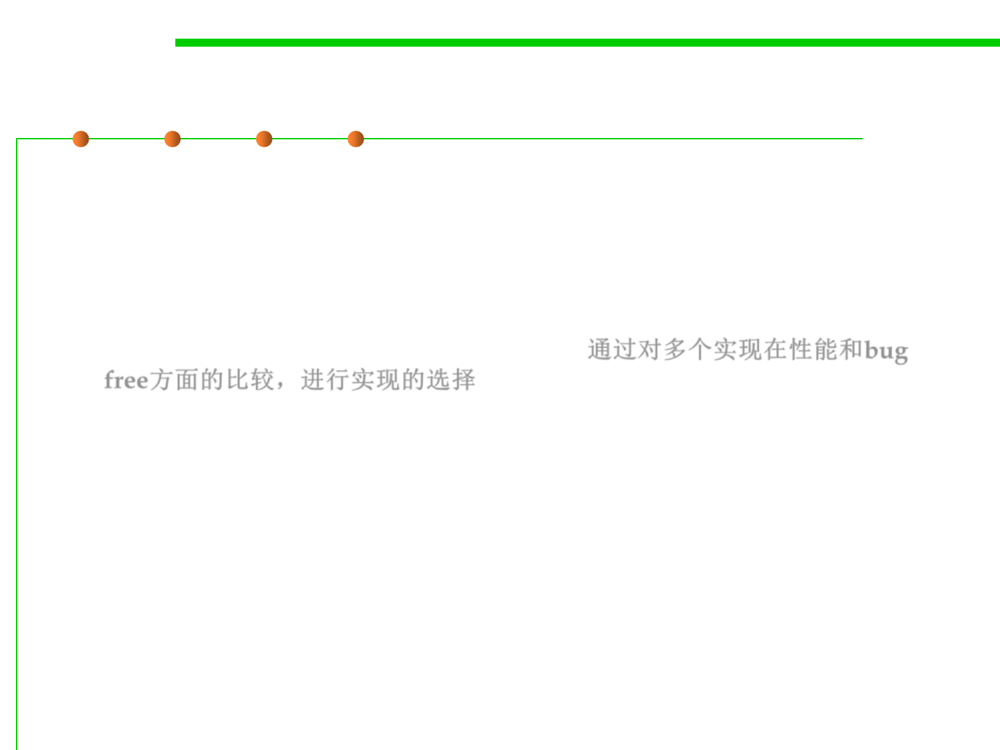

Summary of Interface
3.4 Object-Oriented Programming (OOP)
▪ More and less trustworthy implementations
– Another reason to implement an interface multiple times might be that it
is easy to build a simple implementation that you believe is correct, while
you can work harder to build a fancier version that is more likely to
contain bugs. You can choose implementations for applications based on
how bad it would be to get bitten by a bug. 通过对多个实现在性能和bug
free方面的比较，进行实现的选择